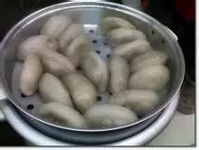

厦门小吃攻略
厦门小吃是是福建省汉族饮食文化的一个重要分支，厦门的风味和土特产颇负盛名，以闽南菜为代表之一的闽菜是中国八大菜系之一。厦门菜肴对中国各大菜系兼容并蓄，创出清、鲜、淡、脆、略带微辣甜酸的独特风味，尤以生猛海鲜、仿古药膳、普陀素菜、风味小吃著称。厦门小吃品种丰富多样，风味独特，令人难忘。在厦门，小吃既可是点心，亦能作正餐，甚至可以上宴席待客。最有名的厦门小吃有石码五香、龙岩芋包、闽南韭菜盒、闽南芋枣、厦门章鱼、油葱馃、卤豆千、厦门咸鸭、蚝干粥 ，同安封肉，海蛎煎，土笋冻，面线糊，鼎边锉，沙茶面，春卷，咸饭等等200多种。
厦门食俗
小吃是厦门食俗的一个重要内容。没有一个厦门人不吃小吃，它已经深深融于厦门人饮食习俗之中，成为一种偏好，一种习惯，一种民风。那马路边骑楼下点着"臭十"(乙炔)灯的煎豆子，便是刻骨铭心的故乡印象。可以说，不了解厦门的小吃，就不仅无法了解厦门的食俗，也就无法了解厦门人。
品种
据厦门民俗学会调查，厦门的小吃大约有200多种，制作售卖小吃的摊点、酒楼、餐馆。
厦门小吃厅仅在岛内就有2600多家，许多黄昏之后才出现的流动摊贩尚不计算在内。
最有名和最普遍的厦门小吃有:厦门春卷、烧肉粽、鱼丸、五香、芋包、韭菜盒、芋枣、章鱼、油葱馃、厦门卤豆干、厦门卤鸭、蚝仔粥、面线糊、炸枣、糖葱饼、薄饼、沙茶面、鱼丸、麻籽、贡鱿鱼、"翻煎"豆干、加滋螺、花螺、芋馃炸、海蛎煎、马蹄酥、炒馃条、面茶、虾面、烧豆花、花生汤、厦门炒面线、炒米粉、豆包仔馃等等。
蛤蜊煎
蛤蜊煎深受厦门本地人喜爱。把蛤蜊放入调好的面粉糊里入油锅煎成蛤蜊煎，是街头最受欢迎的美味小吃。蛤蜊煎外皮焦黄，内里软嫩，还可以咬到丝丝的蛤蜊肉，味道独特。
闽南春卷
来源版本一:相传福建百姓为了感谢郑成功，每家出一道菜来招待他。郑成功为不负百姓的厚爱，在一张烙熟了的面皮上夹入每家的菜，卷起来吃。这便有了后来的春卷。在清明节临近的那段时间，很多闽南人家里都会做这种春卷，因为海蛎是这种春卷的材料之一，清明节临近这段时间海蛎是最肥美而不腥的。
来源版本二:相传明朝同安人蔡复一，总督云贵湖广军务，经常整日批阅公文，忙得无暇吃饭，蔡夫人担心长此以来，丈夫会饿坏身体，遂想出一个办法:用面皮包着菜肴，让蔡公右手执笔，左手取食，边吃边写，十分方便。这种吃法，后逐渐流传开来，在闽南便成了家常名品了。逢年过节，家家户户有吃薄饼的习惯，特别是清明节尤为普遍。
烹制过程及原料:春卷又名春饼，厦人叫薄饼。用面皮包着各种菜肴食用，作料主要是笋、豌豆、豆芽、豆干、蛋丝、鱼、虾仁、肉丁、海蛎及红萝卜等。其中豆干丝，越细越好，用油炸过能吸收其中鱼、虾、肉类津液，使饼皮不致被馅的汤弄湿搞破，吃起来脆嫩甘美，醇甜可口。
五香条
五香条起源于漳州，在厦门五香条同样也是极为可口的美味。 它用一种专门的豆皮，裹上剁碎的精肉、荸荠、葱等，包成如春饼的一条条，再放下油锅炸成焦黄，切成几段，蘸佐料进食。
海蛎煎
海蛎煎也叫蚵仔煎，是闽南一道著名小吃。海蛎煎的做法每个地方略有不同，所以特色也不一样，下面介绍的只是厦门当地海蛎煎的做法。
海蛎煎则是选黑耳白肚(黑白对比越强烈，说明越新鲜)的"珠蚝"，拌和青蒜、韭菜、地瓜粉，摊入油锅，两面煎透。讲究一点，还要在入锅后，再摊上搅散的蛋，一道煎熟。起锅后，撒点胡椒，放数叶芫荽，吃时再蘸上芥辣、辣酱、香醋。
虾面
虾面是厦门传统特色小吃，重汤而不重面。汤选用厦门本岛附近岛屿的一种叫做"狗虾"(九节虾)的野生小虾和猪骨的头汤一起熬煮。
糖葱饼
糖葱饼，过去有许多小贩挑着担沿街走巷叫卖，它是用特制的约五六厘米
糖葱饼直径的小春饼皮，包上一小段专门炼制的油葱糖和酸萝卜、葱、蒜、辣酱，莽辣等等。
沙茶面
沙茶面可算是当今厦门最普遍的小吃了，无论闹市或深巷，几乎无处
沙茶面不在。
沙茶面的妙处，也是在汤头。好的沙茶面汤，是用猪的大骨汤加上沙茶辣酱、花生酱等熬成。
芋泥、芋枣、芋包
芋泥、芋枣、芋包，是把槟榔芋头蒸熟，捣成泥，然后包肉，笋等，用蒸笼蒸过，即成芋包。或者什么也不包，只加糖，搓成一粒粒如大枣，再油炸，即成芋枣。若是加糖，油炒，则成芋泥。芋泥起锅后，面上油多，很快就不冒烟，但内里却是十分烫，不知底细，就要吃亏。也有咸芋泥，如南普陀素菜的"香泥藏珍"，即把苹泥包上各种菜，整碟或整碗蒸熟，边上再撒些油炸过的酥脆可口的青菜叶丝，吃起来十分可口。
花生汤
花生汤是厦门风味独特的甜汤佳点，清甜爽口，滋补润肺。厦门的花生汤最著名的是位于中山路头的黄则和花生汤店，距今已有五十多年历史。黄则和来自于泉州，他的花生汤在厦门极具代表性，不仅本地有声誉，在外来旅客、港、澳、台同胞及海外侨胞中，也早已闻名。
炒面线
厦门独特名菜，系原"全福楼"、"双全酒家"所创。大多数人可能听都没听过，但是这确实是最具招牌的厦门菜，绝对厦门制造，很少有外地人吃过，那是因为制作的困难程度非一般炒面可比，关键在炸面线和炒的功夫上，稍不注意就会炒得太硬或太烂。炒面线在婚宴上是必定有的。
沙茶烤串
以猪的里脊肉为主料，切成长方片，用精盐、味精、绍酒、咖喱粉、胡椒粉浆腌渍后，用竹签将肉片串成串，再涂上沙茶酱料，在电热烤炉上反复翻烤而成，以金黄色为佳。食时再蘸用沙茶酱、花生酱、辣椒油合成的特别酱料。
韭菜盒
韭菜盒系用面粉拌猪油做皮，以猪腿肉、虾仁、扁鱼、孛荠、韭菜、香菇做馅。包成一个个像小盒子一样的饼，边沿捏成波浪形放进油锅炸熟，食之馅鲜美，皮香脆。
馅饼
厦门鼓浪屿馅饼作为闽南传统产品之一，已有50多年生产历史。外
南普陀素饼观小巧玲珑，色泽金黄，味香皮酥，馅甜适口，并具有爽喉之冰凉感。
馅饼的主要原料是面粉、绿豆、猪油、白糖。特点在于绿豆研磨很细，蒸煮得很烂，此外，糖膏的软硬度也控制的恰当好处，因而产品入口易熔化，产生冰凉感，有食而不腻的效果。外皮制作以油当水，精工揉合，焙烤后饼香清甜，酥而不破。是茶点、点心的可口佳点。
金包银

绵绵冰
咸水鸭
鸭要选好,内山的菜鸭.最好是自家养的,不吃饲料。田里的那种皮薄，